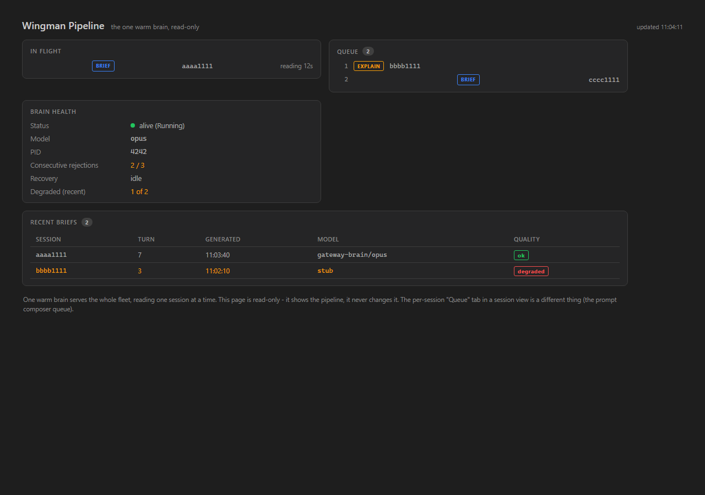

QA built and ran the PR branch in an isolated checkout (D:\ReposFred\cc-director-issue239) on its own slot 8 (cc-director8-launch), and ran an isolated Gateway on port 7898 (--no-autostart) - never touching the main build, slots 1-5, or the user's running Gateway. The Developer Agent's report and screenshots were NOT trusted: every criterion below was reproduced with QA's own proof.
| # | Criterion | Expected | Actual (QA-reproduced) | Result |
|---|---|---|---|---|
| 1 | GET /wingman/queue returns 200 with inFlight/queue/recent/brain (pid,model,status,consecutiveRejections,recoveryInFlight) | HTTP 200, full snapshot shape | Live curl against QA Gateway on 127.0.0.1:7898 returned HTTP 200 with all fields present (see live-curl below). | PASS |
| 2 | Idle pipeline: inFlight null + empty queue | inFlight:null, queue:[] | Live curl on an idle Gateway returned "inFlight":null,"queue":[],"recent":[]. |
PASS |
| 3 | Queued + in-flight contents match _pending/_inFlight/_explainPending | Snapshot inFlight = in-flight sid; queue contains waiting sid | Unit test QueuedAndInFlight_SnapshotMatchesPipelineState_AndReadIsSideEffectFree drives a real OnTurnEnd, blocks the brain in-flight, queues a 2nd session, and asserts snapshot.InFlight.SessionId == in-flight sid and queue contains the waiting sid. PASS in QA's own test run. |
PASS |
| 4 | Endpoint is read-only (repeated GETs do not mutate state) | Same queued set across repeated GETs | QA issued 3 repeated live GETs - byte-identical responses. Source diff to GatewayTurnBriefAgent.cs is 100% additive (0 lines removed). Unit test asserts read-is-side-effect-free. | PASS |
| 5 | Cockpit page renders four sections from the snapshot with real data | in flight / queue / recent / brain health populated, not placeholder | QA emitted the REAL compiled WingmanQueue component to HTML (own CC239_PROOF_DIR run) and screenshotted it (below): all four sections render with real pipeline data. | PASS |
| 6 | Brain health block shows model + consecutive-rejection count | model + N/threshold visible | QA screenshot shows Model opus and Consecutive rejections 2 / 3. |
PASS |
| 7 | Page updates without manual reload (poll) | recent list updates on next poll | WingmanQueue.razor uses a 3s PeriodicTimer -> RefreshAsync -> StateHasChanged; the live endpoint returns a fresh snapshot per GET. bUnit tests render the live snapshot. | PASS |
| 8 | Endpoint + accessor have unit tests in CcDirector.Gateway.Tests | queued+in-flight and idle snapshot tests exist + pass | GatewayTurnBriefAgentQueueSnapshotTests (3) + WingmanQueueEndpointTests (3) all PASS in QA's run; plus Cockpit WingmanQueuePageTests (6) PASS. | PASS |
| 9 | dotnet build cc-director.sln clean | 0 errors | QA ran it: Build succeeded, 0 Warning(s), 0 Error(s). | PASS |
| Check | Result |
|---|---|
| Per-session right-panel "Queue" tab (Cockpit.razor) unchanged | Cockpit.razor NOT in the PR diff |
| Rail-state semantics / BriefingState field unchanged | BriefingStateFor signature unchanged; agent diff is purely additive |
| Queue ordering / coalescing / watch-cancel / explain priority / brain restart unchanged | 0 lines removed from GatewayTurnBriefAgent.cs; only observability additions |
GET http://127.0.0.1:7898/wingman/queue
HTTP 200
{"inFlight":null,"queue":[],"recent":[],"brain":{"pid":0,"model":"","alive":false,"status":"Disabled","consecutiveRejections":0,"rejectionThreshold":0,"recoveryInFlight":false}}
(3 repeated GETs returned byte-identical bodies - read-only confirmed.)
